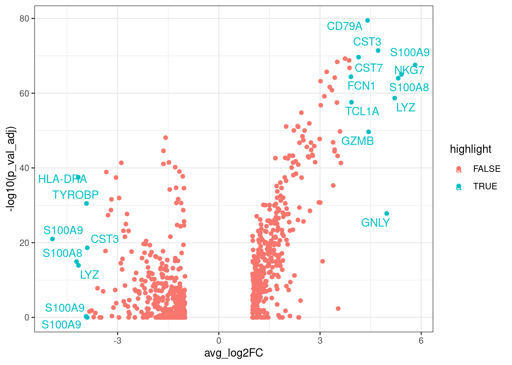

8 Differential Expression Analysis
The main advantage of using scRNA-Seq technologies is the possibility of assessing cell type specificity and heterogeneity, which is not possible while using bulk assays.
We should expect that some of the identified clusters in the UMAP might correspond to distinct cell types. The assignation of cell types identities is not always straightforward, some clusters might still contain some variability, and additionally, different clusters might correspond to the same cell type at a different functional, metabolic or cycling point.
Cell type profiling is generally done by assessing the expression of markers. This task can be done manually by inspecting markers in dimensional reduced data projected in UMAP or tSNE. It can also be done in a automatic manner scoring cells using gene signatures, which are lists of marker genes. Scores are generally based in the median expression of all the markers. Using scores has the advantage or reducing bias due to the arbitrary selection of markers.
Finding differential expressed markers is important for cluster profiling and
identification. We will use the FindAllMarkers(), this functions performs
a statistical test comparing the distribution of gene expression values for
each gene separately comparing one assigned cell type cluster (in this case
the seurat_clusters column) vs the rest.
First, we will set up the column used to define the clusters using the
function Idents().
Idents(pbmc.seurat) <- pbmc.seurat$seurat_clustersNow we can calculate the DEGs.
There are several parameters for FindAllMarkers(), we will discuss
logfc.threshold, min.pct and min.cells.feature that corresponds to the threshold of gene
expression fold change, the minimum percentage of cells expressing the marker
and the minimum of cells expressing (counts > 0) the feature. These parameters
are used to filter out genes prior calculating DEGs. Lowering the values of these
parameters will increase the sensibility of the method at the expense of
increasing computation time.
pbmc.degs <- FindAllMarkers(pbmc.seurat,
logfc.threshold = 1,
min.pct = 0.05,
min.cells.feature = 10,
verbose = FALSE)The output pbmc.degs consist of a data frame contanning the DEGs with
p-vales, p-adjusted values and log fold change values for each gene as
we can see next:
head(pbmc.degs)## p_val avg_log2FC pct.1 pct.2 p_val_adj cluster gene
## LDHB 1.904954e-47 1.676499 0.924 0.489 2.414148e-43 0 LDHB
## CD74 3.347159e-46 -2.889919 0.746 0.946 4.241855e-42 0 CD74
## CYBA 6.600780e-46 -1.641294 0.750 0.953 8.365168e-42 0 CYBA
## HLA-DRB1 9.890935e-44 -3.333839 0.103 0.703 1.253478e-39 0 HLA-DRB1
## HLA-DRA 2.565779e-42 -4.164359 0.295 0.768 3.251612e-38 0 HLA-DRA
## HLA-DPA1 8.697736e-37 -2.954716 0.205 0.717 1.102264e-32 0 HLA-DPA1We can make a vulcano plot using ggplot:
library(ggplot2)
library(dplyr) ## for handling data frames
library(ggrepel)
pbmc.degs %>%
arrange(desc(abs(avg_log2FC))) %>% ## Arranging genes by FC
mutate(rank=1:nrow(pbmc.degs)) %>% ## Ranking markers by FC
mutate(highlight=ifelse(rank<20, TRUE, FALSE)) %>% ## highlighting top FC markers
mutate(gene_label=ifelse(highlight==TRUE, gene, '')) %>% ## Adding labels for top markers
ggplot(aes(x=avg_log2FC, y=-log10(p_val_adj),
colour=highlight,
label=gene_label)) + ## adding labels for top markers
geom_point() +
geom_text_repel() +
theme_bw()